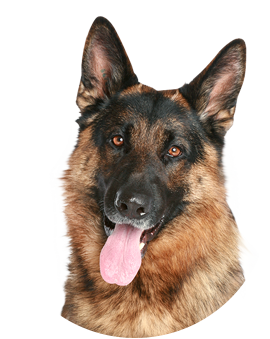
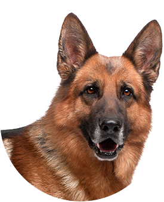
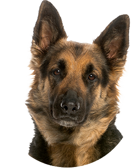

Our dogs
-

Bazzi Terra Di Zeus
Sire Born: 06. November 2013
MaleSmart, confident, courageous, and steady; a true dog lover's dog, the excellent choice for your family.
-

Charmel Ruhmes
Sire Born: 01. April 2009
FemaleEnergetic and fun-loving, is very fond of children once a relationship is established. She is waiting to become a part of your family.
-

Phil van der Lust
Sire Born: 08. June 2006
MaleHe's an intelligent and capable working dog. His devotion and courage are unmatched. Your children will love him.
-

Zolly Frankengold
Sire Born: 21. January 2006
FemaleShe's amazingly versatile, excelling at most anything she's trained to do: herding, search and rescue, drug detection, competitive obedience and, last but not least, faithful companion.